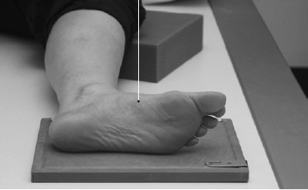

Foot(Lateral)
Centering point:Centered to the base of the metatarsals
Perpendicular to cassette

Cassette Size:24cm x 30cm (12 x 10 ins)
Landscape
Exposure Factors:60kVp on
4MaS
FFD:100cm
Bucky/Grid:No
Filter:No
Collimation:Outer skin margins of foot to include proximal ankle
Pathologies:Fractures, lesions
Position of patient and cassette
- Patient is supine on the X-ray table or barouche
- Turn patient toward affected side until leg and foot are lateral
- The lower leg should be parallel to the table in most cases, however if not, then the foot and IR can be elevated on sponges to achieve this desired position
- Keep the other leg behind to prevent over rotation
- Ask the patient to dorsiflex their foot, if possible, so that the plantar surface is at 90° to the lower leg
- Plantar surface of foot is perpendicular to cassette
- Place the cassette under the foot so that the midline is parallel with the long axis of the foot
- Centre to the base of the metatarsals
Critique:
- Positioning
- Metatarsals should be nearly superimposed
-
Fibula overlapping the posterior portion of distal tibia
-
Majority of the femur is visualised
- Tibiotalar joint demonstrated
- The domes of the talus are superimposed
-
Area Covered
distal phalanges to the calcaneus
- proximal ankle joint
- 2.5cm of distal tibia/fibula
- soft tissue of the foot
Collimation- Centre: The base the metatarsals
- Shutter A: Open to include 2.5cm of the tibia and soft tissue of the sole of the foot
- Shutter B: Open to include the soft tissues of the toes and the heel
Exposure- Enough density to demonstrate the superimposed tarsals and metatarsals
- soft tissues are shown
- bony trabecular patterns and cortical outlines are well defined
- correct contrast and density to show the fat pads of the foot and ankle